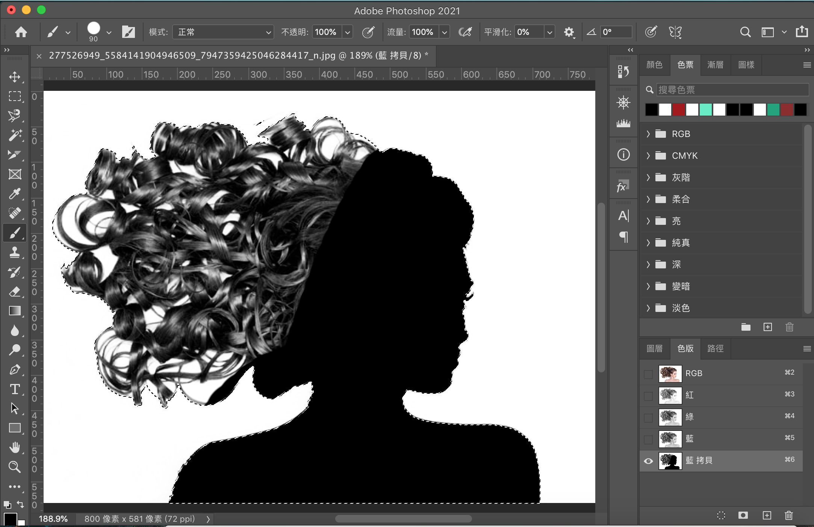

連假前來個小回顧。
3/28 (一)
早上搭車的時候，邊收看「2022 WorkLife Opening 未來工作生活大解構」邊做點筆記，收穫滿滿，對工作及生活有著大開眼界般的見解！
學 Photoshop 做筆記
下午旁聽影像合成課，學到了 Photoshop 去背、修臉的技巧，我也是邊上課邊做筆記，這幫助我之後再看的時候能快速回憶起來。
來放其中一段筆記當作例子：
主角很多細節的去背
（before）
- 右下角在圖層旁邊的「色版」→ 選一個顏色的色版複製一個 → 反白也就是選取那個色版（其他的不能動到，不然完成都開起來後顏色會變）
- 影像 → 調整 → 亮度/對比 → 「對比」調到最高，這樣等等會更好抓髮絲的紋路
- 這樣等等會更好塗色不會超出範圍：背景單純的圖可先用「魔術棒」點選背景 → 選取 → 反轉
- 塗黑主角：前景色調成黑色 → 筆刷工具 → 把要的人物非黑的部分塗黑（可調大筆刷更快狠準）有沒塗到的部分再放大去一一塗
（中間產物）

- 呈現剪影效果：影像 → 調整 → 色階 → 黑白都往中間拉 → 按確定
- 選取人物：魔術棒工具點背景(不要勾連續) → 選取 → 反轉
- 色版 → 打開 RGB → 圖層 → 增加遮色片 → 剛剛複製出來的色版可以丟掉了
（after）
圖看起來有些白邊，怎麼修？我有記筆記，但礙於篇幅(?)，可能就不先放上來了😅
後來勒
上完課就去圖書館寫「圖形識別 Homework 2」，效率奇佳！（做事前沒想那麼多，開始做就對了，想太多反而會成為阻礙）
吃晚餐的空檔，拜讀了何則文老師的「從對目標受眾的理解來建設EVP」，剛好跟早上搭車看的影片有關聯，覺得還蠻有趣的xD
晚上決定跟著「🔴 Let’s build Spotify 2.0 with NEXT.JS 12.0! (Middleware, Spotify API, Tailwind, NextAuth, Recoil)」這個影片來學怎麼 clone Spotify，影片有4小時，最近會慢慢跟完。
雖然常聽到說跟著影片模仿學比較沒有效果(?)，但我想說透過看影片模仿的方式，來擴增我的資料庫或者說是技能包。（「tutorial-spotify-clone」我會放在 GitHub 上，目前我 GitHub 實在太空😅）
3/29 (二)
早上讀「跟著柴鼠學FQ」，結束前用「自由書寫」的方式來記錄體悟，以免讀完整本書以後，很多東西都忘得一乾二淨了。（總是要留點什麼才好，不然有點可惜）
因為昨天的教學影片用的是 Next.js，讓我間接找到了 Next.js 官方的 Learn Next.js，意外發現讀起來好讀又有趣之外，也包含很多跳脫 Next.js 的網頁開發相關知識，覺得挖到寶，之後會繼續用零碎時間把它啃完！
心裡多少會有個聲音：「只是讀，沒跟著操作有什麼用？」啊就讀了以後，真的有學到新東西啊，實作的話，可以等跟著影片 clone Spoitfy 的時候來熟悉，而且感覺在實作之前先懂它的邏輯，會更知道自己在做什麼。（哎呀，人生沒有標準答案啊！相信自己的直覺吧！）
接著就是上電腦動畫與特效＆和聲學。（流水帳xD）
吃完晚餐寫和聲學作業，然後打球跟別人三打三的時候全身冒煙，都懷疑自己是不是巨人了😂
3/30 (三)
早上上圖形識別。
作品集可以怎樣優化
午餐配「Portfolio Projects that Get you Hired」這個影片，頻道主秀出 stand-out-to-him 的作品集頁面。我那個時候忘記做點筆記，但還有點印象：
- 招募者可沒空 register 去試你的 APP，何不做個 demo 的 GIF 來展現呢？
- 可以讓人看出來你使用了哪些核心功能或技術，像是 authentication、database CRUD、串接第三方 API
- 可以用條列的方式來簡述你做了什麼，招募者可沒那麼多時間讀故事啊
好像還有一些不錯的建議，真的有點可惜沒記下來😅
後續
零碎時間，不管是排隊買午餐還是搭車，都在讀 Learn Next.js，沒辦法，它太讚了xD
下午搭車前去測 Inbody，想了解自己的身體狀況！（學校資源真的要好好運用啊）
晚上遠端幫朋友解決 Windows 上面 Python 環境設定的問題以及一點小教學，才知道有「TeamViewer」這麼方便的遠端工具！（也才又找回小時候喜歡教同學的感覺）
職涯路上，那些看似平凡無奇的事物，仔細一看，其實還挺有意思的😎